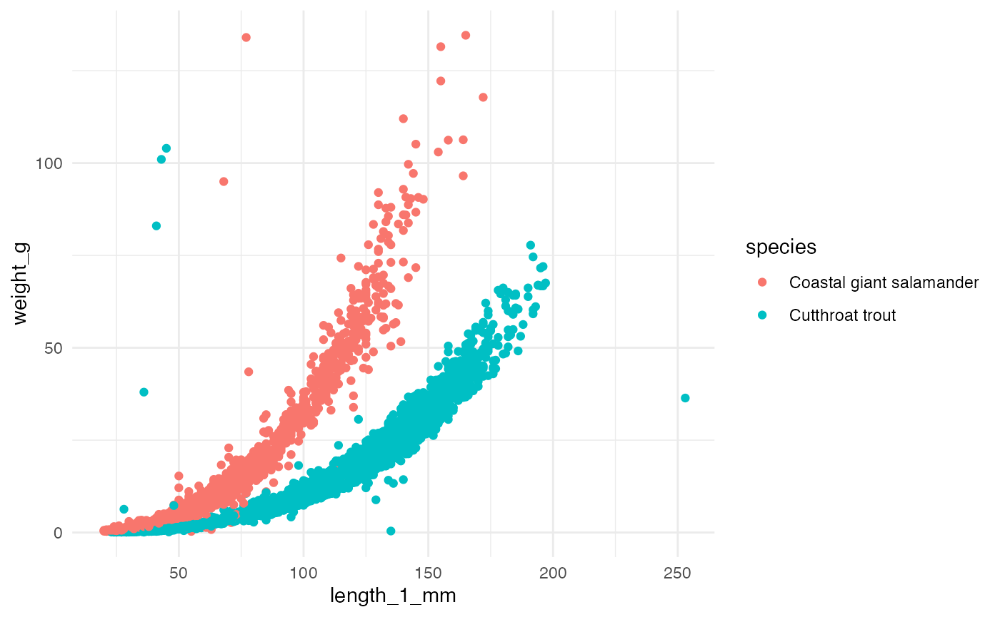
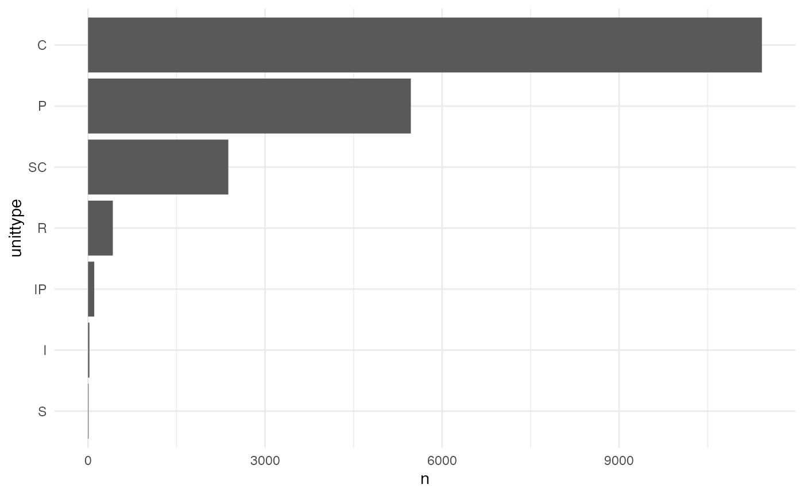

Andrews Forest LTER Mack Creek cutthroat trout and salamanders (AND)
Source:vignettes/and_vertebrates_vignette.Rmd
and_vertebrates_vignette.RmdOverview
This dataset contains length and weight for West Slope cutthroat trout and two salamander species (Coastal giant salamander, and Olympic torrent salamander) in previously clear cut (c. 1963) and old growth coniferous forest sections of Mack Creek in HJ Andrews Experimental Forest in Willamette National Forest, Oregon. For more information, click here.
The data provides opportunities to explore length-weight relationships for three species observed, to compare biomass, abundance and sizes of species in old growth versus previously clear cut forest sections of the creek, and more.
Packages
library(lterdatasampler)
library(tidyverse)
#> ── Attaching packages ─────────────────────────────────────── tidyverse 1.3.1 ──
#> ✔ ggplot2 3.3.5 ✔ purrr 0.3.4
#> ✔ tibble 3.1.6 ✔ dplyr 1.0.7
#> ✔ tidyr 1.1.4 ✔ stringr 1.4.0
#> ✔ readr 2.1.0 ✔ forcats 0.5.1
#> ── Conflicts ────────────────────────────────────────── tidyverse_conflicts() ──
#> ✖ dplyr::filter() masks stats::filter()
#> ✖ dplyr::lag() masks stats::lag()Example analyses
Exploring length-weight relationships
There is opportunity to explore and model the length-weight relationships for the three species (for example, using the standard lenght-weight relationship for fish: \(W = aL^b\)).
ggplot(data = and_vertebrates, aes(x = length_1_mm, y = weight_g)) +
geom_point(aes(color = species)) +
scale_color_viridis_d() +
theme_minimal()
#> Warning: Removed 13279 rows containing missing values (geom_point).
Length observations for Olympic torrent salamanders are in the length_2_mm variable.
Comparisons by section (clear cut or old growth)
The two sections in the dataset (CC = clear cut circa 1963, OG = upstream 500 year old growth coniferous forest) provide opportunity to explore differences in vertebrate biomass and abundance in the separate sections.
This can be further motivated by
Vertebrate abundance by year and section
vert_counts <- and_vertebrates %>%
drop_na(year, species, section) %>%
count(year, species, section)
ggplot(data = vert_counts, aes(x = year, y = n)) +
geom_line(aes(color = section)) +
geom_point(aes(color = section)) +
scale_color_viridis_d() +
theme_minimal() +
facet_wrap(~species)
Abundance correlation by section
vert_counts_wide <- vert_counts %>%
pivot_wider(names_from = section, values_from = n)
ggplot(data = vert_counts_wide, aes(x = CC, y = OG)) +
geom_point() +
theme_minimal()
#> Warning: Removed 4 rows containing missing values (geom_point).Vertebrate biomass by section
Similarly, total biomass by section and/or reach can be compared for the vertebrate species to explore differences in clear cut versus old growth sections.
vert_biomass <- and_vertebrates %>%
drop_na(year, species, section, weight_g) %>%
group_by(year, species, section) %>%
summarize(tot_biomass = sum(weight_g))
#> `summarise()` has grouped output by 'year', 'species'. You can override using the `.groups` argument.
ggplot(data = vert_biomass, aes(x = year, y = tot_biomass)) +
geom_point(aes(color = section)) +
scale_color_viridis_d() +
theme_minimal() +
facet_wrap(~species)
How we processes the raw data
Download the raw data from EDI.org
library(tidyverse)
library(lubridate)
library(janitor)
library(usethis)
library(metajam)
and_url <- "https://portal.edirepository.org/nis/dataviewer?packageid=knb-lter-and.4027.14&entityid=5b18ded1cd996f5e8d361a9275a600cf"
and_download <- download_d1_data(data_url = and_url, path = tempdir(), dir_name = "and")Data cleaning
# Read in data
and_files <- read_d1_files(and_download)
and_data <- and_files$data
# Basic cleaning
and_vertebrates <- and_data %>%
janitor::clean_names() %>%
rename(length_1_mm = length1,
length_2_mm = length2,
weight_g = weight) %>%
select(-dbcode, -entity) %>%
mutate(species = case_when(
species == "ONCL" ~ "Cutthroat trout",
species == "DITE" ~ "Coastal giant salamander",
species == "RHOL" ~ "Olympic torrent salamander",
TRUE ~ species
))